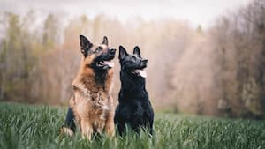

Choosing a Breed
Growing your tribe by four paws is a big decision. After all, you’re about to find your new best friend.
It’s important to acknowledge that every dog has different characteristics and some may be a better fit for your lifestyle than others.
But with so many cute furry faces staring at you every time you visit your local shelter (it happened to me), it can be overwhelming trying to decide which one of those wagging tails and slobbery smiles you want to make your own.

Chart of different dog breeds
Poodle

Whether Standard, Miniature, or Toy, and either black, white, or apricot, the Poodle stands proudly among dogdom’s true aristocrats. Beneath the curly, low-allergen coat is an elegant athlete and companion for all reasons and seasons. Read more on Poodles here.
German Shepherd
Generally considered dogkind's finest all-purpose worker, the German Shepherd Dog is a large, agile, muscular dog of noble character and high intelligence. Loyal, confident, courageous, and steady, the German Shepherd is truly a dog lover's delight. Read more on German Shepherds here.
Golden Retriever

The Golden Retriever, an exuberant Scottish gundog of great beauty, stands among America's most popular dog breeds. They are serious workers at hunting and field work, as guides for the blind, and in search-and-rescue, enjoy obedience and other competitive events, and have an endearing love of life when not at work. Read more on Golden Retrievers here.